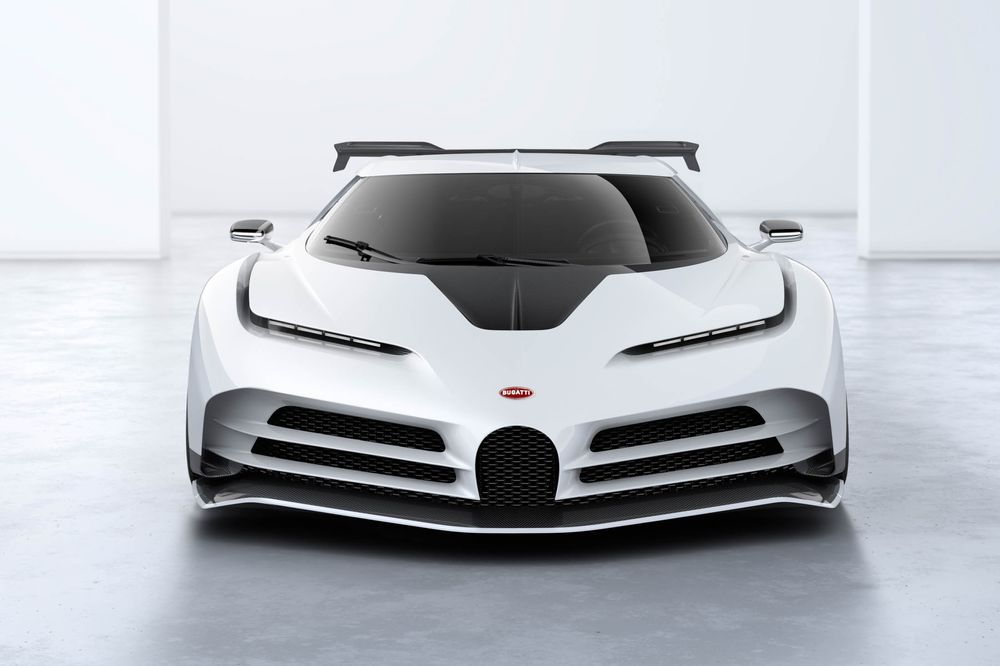

Top Ten Most Expensive Cars In The World
1. Rolls-Royce Boat Tail
Rolls Royce is known for its luxury cars. The new Boat Tail looks exquisite,
it is a successor to the gorgeous Sweptail that was produced in 2017.
The Sweptail cost $12.8 million. The company hasn’t announced the pricing yet,
but the rumours say that the Boat Tail is supposed to be a whopping $28 million.
The exterior of the Boat Tail is two-toned, which is not seen on many cars,
the finishing is high-end, and the interior comes with a “hosting suite” with a
built-in sun umbrella and champagne fridge. Who doesn’t love champagne, right?
Rolls Royce never disappoints.

2. Buggati La Voiture Noire
Buggati La Voiture Noire comes with the quad-turbo 8 litre W16 engine.
It produces 1479 horsepower and 1600 newton-metres of torque. One can
find it hard to believe, but this car comes with six exhaust tips.
The swanky new Buggati La Voiture Noire comes with radical wheels, the
fascia is bespoke, and the badge at the backlights up to spell the name
of the brand, making it evidently Buggati. La Voiture Noire is a tribute
to the history of the legendary Buggati. It stands for sophistication and elegance.
It brings speed, aesthetics, luxury, and technology and is nothing short of an icon.
This all-black Atlantic is priced at $18.7 million.

3. Buggati Centodieci
The Centodieci is a really rare car, it was debuted by Buggati in Pebble Beach car week. The Centodieci builds on Bugatti’s 110-year tradition of excellent design and performance while also honouring the brand’s recent heritage. Bugatti designed a recreation of the epochal EB110 with the Centodieci – Italian for 110. With its astounding performance and pioneering design, the Centodieci, inspired by the historical model, challenges all bounds of creativity. The Centodieci, with its modern version of the classic wedge shape and the renowned W16 engine, tastefully ushers the EB110 into the new millennium. There are only 10 units produced and the 10 limited-edition cars are distinguished by their flawless elegance and sculptural beauty, transforming the Centodieci into a true work of art. The car is one of the most exclusive cars ever made and it is priced at $9 million.

4. Mercedes Maybach Exelero
The Mercedes-Benz Exelero is a one-of-a-kind vehicle. The Exlero was created in 2004 by Fulda, a German division of Goodyear, to test its new tyres. Mercedes based the Exelero on the Maybach’s frame and equipped it with the same twin-turbo V12 engine that produces 690 horsepower (510 kW) and 1,020 Newton-metres (752 pound-feet) of torque. This supercar is carefully and flawlessly engineered to prevent aerodynamic stress. As a result, it will be able to achieve its aim with the greatest efficacy and efficiency possible. The Mercedes-Benz Maybach Exelero concept automobile is a powerful and large car that weighs 2,660 kg (5,864 lb). The Exelero is a car that reaches a top speed of 351 km/h (218 mph), which is extremely fast in comparison to other concept cars. The Mercedes Maybach Exelero accelerates from zero to 100 kilometres per hour (0 to 62 miles per hour) in just 4.4 seconds. The supercar is priced at $8 million but today it would cost more than $10 million.

5. Buggati Divo
The Divo is a staff favourite among Bugatti’s newly released automobiles. The Divo has a lot going for it to justify the extra money, even though it shares a lot with its cheaper companion, the Chiron. Bugatti made the Divo 77 pounds lighter than the Chiron by adding lighter wheels, a carbon fibre intercooler, and deleting some sound deadening. Despite having the same 1,500 horsepower (1,119 kilowatts) as the Chiron, the Divo has a different aerodynamic arrangement that makes it 8 seconds faster around the Nardo test circuit. The moment you’ve been waiting for has finally arrived: The car will be produced in 40 pieces, each costing $5.8 million.

6. Koenigsegg CCXR Trevita
“Trevita” is a Swedish acronym that means “three whites” in English. The Koenigsegg visible carbon weave bodywork is famous for its distinctiveness and perfection all over the world. Prior to the Trevita, vehicle manufacturers only had access to standard black carbon fibres. For the Trevita programme, Koenigsegg created a unique coated fibre solution that converted the fibres from black to a gleaming, silvery white. When the sun shines on the Trevita, it gleams as if millions of tiny white diamonds are embedded within the visible carbon fibre bodywork. The Trevita is equipped with a twin carbon rear wing, inconell exhaust, carbon ceramic brakes with ABS, airbags, paddle-shift, chrono instrument cluster, multimedia system, tyre monitoring system, and hydraulic lifting system.
The Trevita was initially planned to be a three-piece limited edition. However, because the Trevita’s white carbon fibre made it incredibly difficult and time-consuming to produce, the decision was made to make the automobile even more unique by limiting the number of Trevitas produced to just two. This limited-edition model is priced at $4.8 million.

7. Lamborghini Veneno
Lamborghini has not only marked the 50th anniversary of its founding (1963) with the Veneno and Veneno Roadster, but has also given birth to a highly special few-of-one that has taken the notion of a super sport roadster to the next level, breaking all limits with the world of racing. Between 2014 and 2015, Lamborghini produced only 14 Venenos based on the Aventador. Each one cost roughly $4.5 million, depending on the features chosen, and came in both convertible and coupe versions. Under the hood, Lamborghini installed a more powerful version of the Aventador’s 6.5-liter V12 engine, which now produces 740 horsepower (552 kilowatts) and 509 pound-feet (609 Newton-meters) of torque, allowing it to reach 60 miles per hour (96 kilometres per hour) in 2.9 seconds. It is the costliest Lamborghini ever built.

8. Buggati Chiron Super Sport 300+
Bugatti drew the attention of the entire automotive world when it announced that a customised version of the Chiron had broken the 300 mph barrier. The Super Sport 300 + is a road-legal variant of that car created to commemorate the event. The Super Sport 300+, which is limited to just 30 units, is a stunning version of the Chiron, with fluid, sliding bodywork and a nice stripe theme. Despite the name, Bugatti is restricting each car’s top speed to “only” 277 mph. The bodywork on the Chiron Super Sport 300+ has been stretched and aerodynamically designed for extremely high speeds. Performance and stability are enhanced by a perfect blend of minimal drag and downforce. The supercar is priced at $3.9 million.

9. Lamborghini Sian
The Sian is a bridge to Lamborghini’s future in varied ways. This wild-looking Lambo is the brand’s first production electrified option, despite being based on the Aventador SVJ. The Sian has a 48-volt mild-hybrid system in addition to the 6.5-liter V12 from SVJ. The total system output is 819 horsepower (611 kilowatts), making it Lamborghini’s most powerful vehicle ever. Lamborghini will only construct 63 models, as shown by the 63 stickers on either side of the Sian’s wing. Each will be significantly more expensive than the Aventador SVJ, which would set you back $3.6 million.

10. Pagani Huayra Roadster BC
Following Pagani’s lead, a roadster version of the fearsome Huayra BC was a done deal. The Huayra Roadster BC, a topless monster with 800 horsepower (597 kilowatts) and 774 lb-ft of torque, was unveiled to mark the occasion. Surprisingly, Pagani increased the roadster’s horsepower by 50 percent above its coupe sibling, thanks to an AMG-sourced twin-turbocharged 6.0-liter V12. Owners should find comfort in knowing that their automobile is ultra-rare, in addition to the satisfaction of hearing the magnificent engine note without a roof in the way. Pagani is only making 40 of these cars, each with a price tag of $3.5 million.
Unique and gorgeous cars from various motor brands may be found all over the world. These automobiles, on the other hand, are exquisitely designed, representing the brands of the industries that produced them
Some engines are of higher quality than others, resulting in some having greater horsepower and others having more torque. These cars’ acceleration is influenced by the amount of horsepower they produce.
These automobiles are appropriate for a rich lifestyle. Any classy person would desire such vehicles to complement their wealth and improve their quality of life.